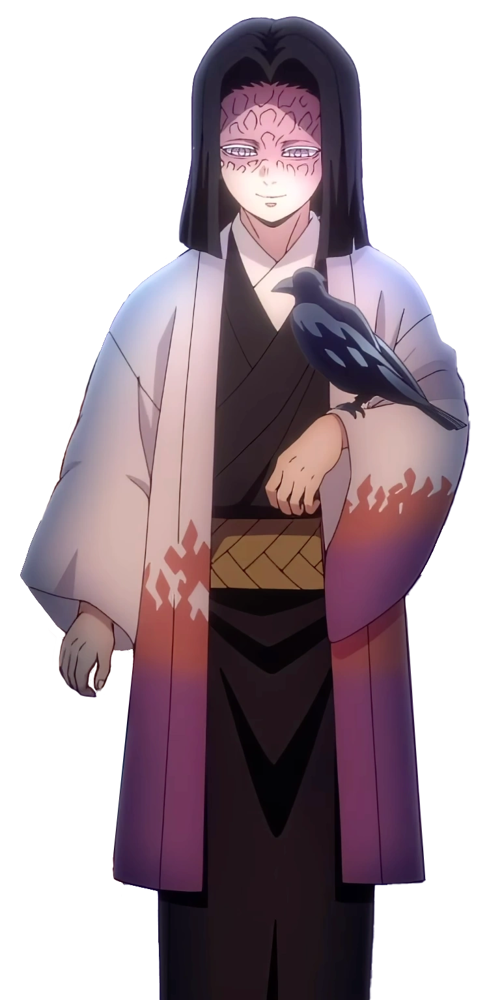
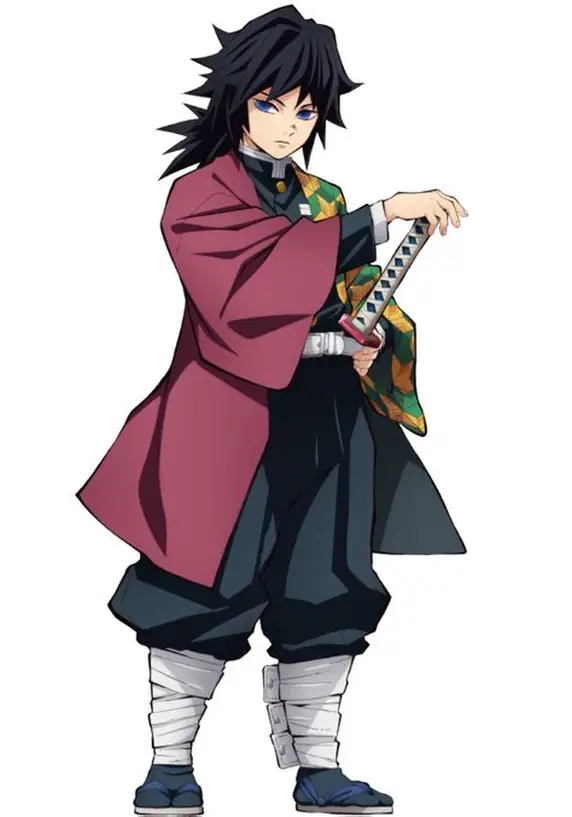
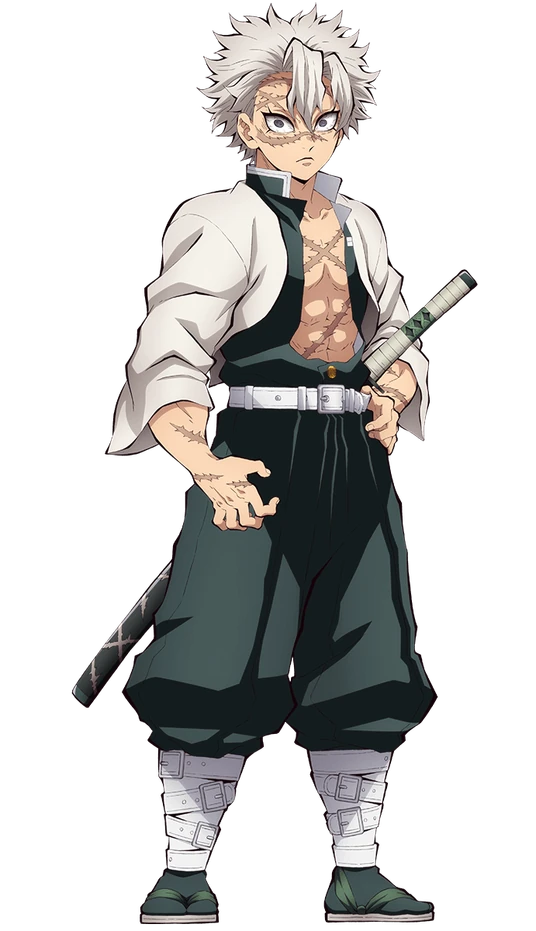
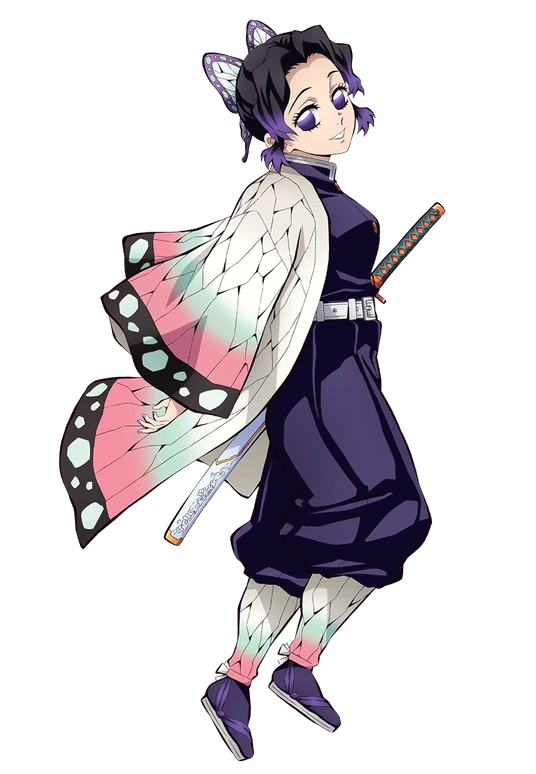
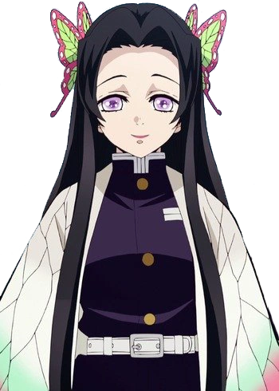

Our Characters
Demon Slayers

Tanjiro Kamado
short bio
Tanjiro Kamado (竈門かまど 炭たん治じ郎ろう Kamado Tanjirō?)is
the main character of Demon Slayer: Kimetsu no Yaiba. He is
kind, determined, and has a strong sense of justice, always
caring deeply for others. After his family is killed by demons,
he becomes a demon slayer to protect humanity and save his
sister Nezuko. Tanjiro’s strong will and compassion make him a
truly inspiring hero.🌸⚔️

Nezuko Kamado
short bio
Nezuko Kamado (竈門かまど 禰ね豆ず子こ Kamado Nezuko?) is
Tanjiro’s younger sister in Demon Slayer: Kimetsu no Yaiba.
Although she is turned into a demon, she keeps her human
emotions and protects innocent people. Nezuko is strong, brave,
and fiercely loyal to her brother. Her kindness and inner
strength make her one of the most loved characters in the anime.
🌸

Zenitsu Agatsuma
short bio
Zenitsu Agatsuma (我あが妻つま 善ぜん逸いつ Agatsuma Zen'itsu?)
is one of Tanjiro’s companions in Demon Slayer: Kimetsu no
Yaiba. He is often fearful and nervous, but he becomes
incredibly powerful when he falls asleep. Zenitsu uses Thunder
Breathing and moves with lightning-fast speed in battle. Despite
his fear, he proves that true courage can exist even in the most
anxious heart. ⚡🗡️

Inosuke Hashibira
short bio
Inosuke Hashibira (嘴はし平びら 伊い之の助すけ Hashibira
Inosuke?) is a wild and aggressive demon slayer who was raised
in the mountains. He wears a boar’s head mask and fights using
his unique Beast Breathing style. Inosuke is loud and
competitive, but deep inside he has a caring heart. His raw
strength and fearless nature make him unforgettable.🐗💥

Kagaya Ubuyashiki
short bio
Kagaya Ubuyashiki is the respected leader of the Demon Slayer
Corps. Despite his weak physical condition, he possesses great
wisdom and a calm, gentle presence. Kagaya deeply cares for
every demon slayer and treats them like his own family. His
guidance and vision keep the Demon Slayer Corps united and
strong. 🌿

Giyu Tomioka
short bio
Giyu Tomioka (冨とみ岡おか 義ぎ勇ゆう Tomioka Giyū?) is a calm
and quiet Hashira known as the Water Hashira. He is the one who
introduces Tanjiro to the path of demon slayers. Giyu is serious
and reserved, but he deeply values justice and responsibility.
His skill and composure make him one of the strongest
swordsmen.🌊🗡️

Yoriichi Tsugikuni
short bio
Yoriichi Tsugikuni is a legendary Demon Slayer known for
creating the Sun Breathing technique. Blessed with extraordinary
talent and perception, he could see the life force of demons and
humans alike. Calm, humble, and disciplined, he dedicated his
life to protecting humanity. His unmatched skills and legacy
continue to inspire generations of Demon Slayers.

Kojuro Rengoku
short bio
Kyojuro Rengoku (煉れん獄ごく 杏きょう寿じゅ郎ろう Rengoku
Kyōjurō?) is the Flame Hashira, famous for his bright smile and
burning spirit. He strongly believes in protecting the weak and
fulfilling his duty as a demon slayer. Kyojuro’s passion,
courage, and kindness inspire everyone around him. His powerful
presence leaves a lasting impact on the story. 🔥🗡️

Tegen Uzui
short bio
Tengen Uzui (宇う髄ずい 天てん元げん Uzui Tengen?) is the Sound
Hashira, known for his flashy personality and love for
extravagance. He values strength, teamwork, and protecting those
close to him. Despite his dramatic attitude, Tengen is deeply
caring and responsible. His unique fighting style makes every
battle exciting.🎶🗡️

Muichiro Tokito
short bio
Muichiro Tokito (時とき透とう 無む一いち郎ろう Tokitō Muichirō?)
is the Mist Hashira and one of the youngest and most talented
demon slayers. He is calm, quiet, and often seems lost in
thought. Muichiro possesses incredible sword skills and sharp
instincts in battle. His hidden depth and strength make him
fascinating. 🌫️🗡️

Mitsuri Kanroji
short bio
Mitsuri Kanroji (甘かん露ろ寺じ 蜜みつ璃り Kanroji Mitsuri?) is
the Love Hashira, admired for her kindness and cheerful nature.
She fights with a flexible sword and a unique Love Breathing
style. Mitsuri is gentle and emotional, yet extremely powerful
when protecting others. Her warm heart sets her apart.💖🌸

Obanai Iguro
short bio
Obanai Iguro (伊い黒ぐろ 小お芭ば内ない Iguro Obanai?) is the
Serpent Hashira, known for his strict and serious personality.
He is highly disciplined and deeply loyal to the Demon Slayer
Corps. Obanai has a strong sense of justice and silently cares
for Mitsuri. His intensity and dedication make him a formidable
warrior. 🐍🗡️

Sanemi Shinazugawa
short bio
Sanemi Shinazugawa is the Wind Hashira, known for his harsh
attitude and violent fighting style. He appears cold and
aggressive, but deep inside he cares deeply about protecting
humanity. Sanemi’s past pain shapes his anger and strength as a
demon slayer. His fierce determination makes him one of the most
intense Hashira. 🌪️🗡️

Gyomei Himejima
short bio
Gyomei Himejima is the Stone Hashira and the strongest member of
the Demon Slayer Corps. He is blind but possesses incredible
physical power and heightened senses. Gyomei is deeply
religious, compassionate, and often seen praying. His unmatched
strength and pure heart earn great respect from everyone. 🪨🗡️

Shinobu Kocho
short bio
Shinobu Kocho is the Insect Hashira, recognized for her gentle
smile and calm voice. Although she cannot cut off a demon’s
head, she uses poison and intelligence to defeat them. Shinobu
hides deep sadness behind her kindness and elegance. Her quiet
strength and sharp mind make her truly deadly. 🦋🗡️

Amane Ubuyashiki
short bio
Amane Ubuyashiki is the devoted wife of Kagaya Ubuyashiki and an
important figure in the Demon Slayer Corps. She is calm,
graceful, and always supports Kagaya with quiet strength. Amane
helps guide and care for the Hashira and other members of the
Corps. Her gentle presence brings balance and warmth to the
organization. 🌸

Kanae Kocho
short bio
Kanae Kocho was the former Flower Hashira of the Demon Slayer
Corps. She was kind, gentle, and believed in understanding even
the demons she fought. Kanae had a warm smile and a
compassionate heart that deeply influenced her sisters. Her
legacy lives on through Shinobu and the ideals she left behind.
🌼